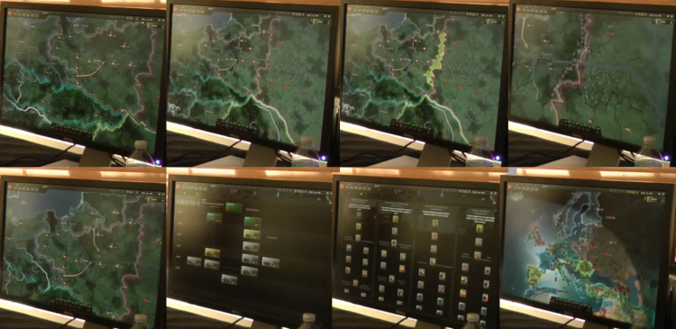

Features
From Hearts of Iron 4 Wiki

Screenshots of the pre-alpha. From Angry Joe ParadoxCon
This page is a repository of all features that have been mentioned by the developers on the forums or elsewhere.
Contents
General[edit]
- Release: June 6 2016[1].
- Steam-only.[2]
- Steamworks-enabled modding.[3]
- Uses the Clausewitz 4.0 engine.[4]
- Difficulty levels to be rethought [5]
- Observer mode (similar to CK2/EU4) "very likely" [6]
- Will use modular DLC system of CK2/EU4 [7]
Time period[edit]
- 1936 - 1948, can be carried on beyond end date presumably by modding the defines.
- There will be fewer 'start-point' scenarios, but they will be more accurate and balanced [8]
Multiplayer[edit]
- Shares EUIV's multiplayer features ("and maybe some extras if [the devs] get the time") [9]
- Up to 32 players.
- Co-operative mode, where different players can play aspects of the same country.[10]
System requirements[edit]
- Linux (and therefore SteamOS), Mac OS.[11]
- Windows XP/Vista/7/8/8.1
- Intel Pentium IV 2.4Ghz or AMD 3500+
- 2GB RAM
- 2GB free hard drive space
- NVIDIA GeForce 8800 or ATI Radeon X1900 video card, 512Mb graphics memory required
- Resolution at least 1024*768
- Direct X-compatible sound card
- DirectX 9
- 3-button mouse, keyboard, speakers
- Internet connection for multiplayer.[12]
Not in the game[edit]
- There will not be a 1933 starting date.[13]
- "Strategic bombing in HoI4 will be abstracted and not allow you to terror bomb civilians specifically." [14]
- "Chemical weapons will also not be included in the game." [14]
- "There will not be any gulags or deathcamps (including POW camps) to build" [14]
- There will be no "ability to simulate the Holocaust or systematic purges" [14]
- There will not be any swastikas or other Nazi/SS symbols or propaganda [14]
History & flavour[edit]
- National focuses include both historical and alternative branches for development and diplomacy.[15]
- Events will exist for certain ministers etc. [7]
- You will now see results like "10 heavy tanks destroyed" rather than some abstracted strength percentage.[16]
Map[edit]
- Weather being redesigned from scratch.[18]
- Counters will be optional; sprites will display lots of unit information [19]
- At some higher zoom levels, division & troop concentration summaries will be given, with more exact positions and numbers provided at lower zoom levels.[7]
Mapmodes[edit]
- Individual, specific mapmodes will still exist (fewer than HOI3 [20]) but the main mapmode takes the main stage.[21]
-
"One of the most dramatic changes is the removal of [edit: prominent] map tabs. In other PDS titles, you can switch from geographical views to political or military maps by selecting a new tab, but this isn’t necessary in HoI IV." [22]
-
- The main map mode now combines various information, displayed dependent on zoom level and user action context.[23]
- At the furthest-out zoom level, you see the political mapmode.[22]
- Further in, provinces, weather and the day/night cycle are graphically displayed in this 'master mapmode' [22][23] (The "New night/day system is accurate and changes correctly depending on time of year"[source needed]) Provinces are lightly shaded in country colours. The day/night cycle accounts for longitude[24]
Graphics[edit]
- Graphically speaking, the map is reportedly very attractive and detailed
- Cities light up at night, though blackouts may also be added.[25] This effect is disabled at far zoom levels for performance reasons.[26]
- Tracer fire can be seen during air raids [3]
- No more faux-Cyrillic lettering for Comintern states [27]
Provinces[edit]
- Roughly the same as HOI3 "(maybe 10% less in some spots? Some added in places.)" [28]
- Provinces are visually clearly of a specific terrain type.[29]
- Some regions have been manually adjusted for gameplay reasons.[30]
"We moved some stuff around as well for example the english channel is much wider than in reality to make invasions and strategic warfare more interesting. It was much too narrow for doing that ok in hoi3."
Politics[edit]
- New ideas, including laws, advisers, and companies.
Economy[edit]
Production[edit]
- Countries assign factories to production lines, which contribute equipment to resource pools for allocation to military units.[22][23]
Construction plans[edit]
- You select the variant model of the vehicles/equipment you want to order for production (instead of the computer automatically using the latest 'technology' as in HOI3)
- You choose how many factories to allocate to a construction plan.
Production lines[edit]
Production lines are collections of factories set up to produce a specific equipment type [7]
- Factories
- "built on the region-level, instead of in individual territories"
- Three types: Military, Naval, and Civilian
- Factories assigned to a construction plan can come from anywhere, but they have to match the type required to build the equipment.
- Weekly Production Rate, influenced by:
- Number of factories
- Location of factories
- Strategic Resources you control
- Efficiency of your factories in building that specific product
- The more you build, the better you get at building individual items.
- Efficiency is kept when switching production, "if [the new product] is a chassis of the same class, or a sub-variant of the same chassis" as the previous product.
- "Bombing factories also hurts production in general, but not specific assembly lines." [23]
Resource pools[edit]
- Instead of recruiting brigades and divisions, you produce 'pools' of resources and equipment, to then assign to units.
- Units use specific models of vehicles that are produced.
- When building a tank regiment, it'll use the best tank you have first, and then fill in the rest with whatever else you've got.
- Replacements also work like this, and are dependent on pools of hardware.
- Training men uses manpower.
- "Quality of the soldiers depends on the level of equipment you give them."
- "Again, you need to build pools of decent equipment to have troops properly trained before they see battle." [23]
Equipment types & usage[edit]
- "Horses won't be tracked though, they are assumed to be part of the basic equipment of a division."
- (Generic) "equipment" is a producible good, required by all units.
- "MOT needs more "equipment", Mech has its own more expensive equipment representing APCs." [31]
- "Upgrading your equipment now means replacing your old models at the front with new tank designs, for example. The old ones can be put in reserve, sent to less important places, or perhaps given as aid to an ally.[16]
- Planned to allow capture of enemy equipment [32]
- Equipment can be bought & traded internationally [33][34]
- "there may be the option of "melting down" equipment to feed the production of compatible variants" [35]
Trade[edit]
- Resource pools of equipment may be tradeable internationally [36]
- Trade will be redesigned, presumably to require more player input.[37]
Technology[edit]
- Fewer slots for simultaneous research, and they take longer to research (than HOI3) [23]
- "More individual techs than in hoi3 currently"
- "11 tech category screens (number of course subject to change)" [38]
Research teams[edit]
- Research teams will focus on "trade-offs" in research, and provide "cool historical flavour" [7]
Unit trees[edit]
- You unlock base unit models instead of abstract technologies
- "(unlock the 1 model via the tech) and you'll be able to upgrade the gun/engine etc via practical experience" [40]
- "There will also be ways to create more custom equipment variants with abilities unlocked by experience over the course of the war." [16]
"you have specific chassis for tanks now (though they are still grouped into Light, Medium, Heavy and S. Heavy)" [23]
- You can then research sub-technologies for that model/chassis.[23]
- Unit trees allow countries to field prototype and experimental technologies that historically were never manufactured or used.[10]
Doctrines[edit]
- Doctrines are widely influential progression chains, "modeled on how nations historically did their military doctrine."
- Doctrines are usable by all countries, not just the one the doctrine is modeled after.[41]
- They have branching paths depending on "how things are going at the time, or how you predict things might go."[23]
- A country can switch to another doctrine at a cost of all the progress they’ve made going down the previous Doctrine tree.
- Doctrine trees available include:
- German
- American
- Russian/Chinese
- Japanese/British [42]
Institutional Experience[edit]
- Fighting in battles will give national military experience.[43]
- Separate XP pools per type of unit (e.g. tanks, infantry...) [44]
- Abstracts battle experience and lessons learned about equipment in action, which leads to improved tech for the whole war machine.
- Countries spend XP from the shared pool for better types of equipment.
-
"With these institutional experience points to upgrade weapons for their own genera can acquire that represent mostly specializations to deal with special situations. An example? The normal tech tree of the German tank contains the Panzer IV only as a basic model. With the army upgrades we develop from this the assault gun variant, a version with 75-mm cannon (the Panzer IV F) or perhaps the Flakpanzer whirlwind." [43]
Warfare[edit]
HQ[edit]
- No more divisional commanders.
- Officers will be a mixture of historical and game-generated.
- "More focus on shaping and leveling the guys you have." [45]
[edit]
- "Naval and air combat will change greatly" [7]
- Air & submarine missions can be ordered at larger-than-province areas; less micromanagement.[46]
- Can be targeted at supply lines and production centres.[43]
- Day and night bomber attacks.[43]
- Daytime attacks are more effective, but unescorted bombers are easier to kill by enemy fighters.
- Night raids are less precise, but the bombers are harder to hit.
Land[edit]
- "Most of the stats of a division will come from equipment" [16]
- Battalion-size attachments will exist, such as:
- Artillery battalion [16]
- "Division is still the smallest unit that can be moved around the map" [16]
- Land combat remains similar to HOI3 [7]
- Selectable special attack options for some units/techs [10]
-
"It’s important for guerrilla tactics, too. Japan, for example, has a doctrine for jungle tactics, and you can use the darkness to infiltrate enemy camps and take them by surprise." [22]
-
Battleplans[edit]
- Units can still be manually ordered.
- However, complex battle plans can instead be drawn onto the map, unit resources allocated to the plan, and the AI automatically carries out the operation.
- They can be adjusted mid-operation, allowing countries to react to new situations.[23]
"If you spot some unexpected resistance on a flank, you can draw a small line that diverges from your main attack, and a small group of units will peel off to engage. If you need to stop and set up a defensive position, you can draw the front line that you want to hold, and units will take up positions and dig in." [47]
- You can develop plans for allies, that they will follow.[10]
- You can share & discuss plans with other countries in Multiplayer.[48] -
- Battleplan actions include:[23]
- General advance
- Split advance (some units split off from the main advance and go another way)
- Blitz
- Paradrop
- Air support
- Defensive line (automatically equally divides divisions along a line [43])
- They split into Five phases, each designated by its own colour on the map. Each phase of an operation is initiated via a user-operated 'activate' interface button. These phases include:[23][43]
- Design
- Deploy
- Prepare - where the AI transports allocated units to the front, and readies them to go.
- ???
- ???
- Phased orders allow timing for aerial support, branching manoeuvres and the like[24]
- Preparation bonus
- Units fighting according to battle plans receive a bonus to combat abilities, compared to those you manually order about.[47] "There will be a ticker that shows the strength of the plan as you charge it up." [22]
- "Longer preparation times are still risky, though, as it gives the enemy time to discover what you’re doing [via espionage]." [22]
Espionage[edit]
- Battle plans can be discovered by spies.
- (You can steal plans of AI countries.[10])
- Enemies will respond to discovered plans by repositioning defenses etc.[47]
- You can create mock battle plans to incorrectly inform enemy spies, throwing them off more legitimate plans.[22]
Modding[edit]
- Most aspects of research tech trees will be moddable [49]
References[edit]
- ↑ https://forum.paradoxplaza.com/forum/index.php?threads/within-2015-really.859521/&sdpDevPosts=1
- ↑ http://forum.paradoxplaza.com/forum/showthread.php?750592-Steam-and-HoI4&p=16770782&viewfull=1#post16770782
- ↑ 3.0 3.1 IncGamers - 25 Jan 2014
- ↑ http://forum.paradoxplaza.com/forum/showthread.php?814718-HoIIV-Developer-Diary-11-Map-amp-Graphics-NO-COUNTERS-DISCUSSION&s=4755aaff3f02f29286892c8525c10426&p=18371517&viewfull=1#post18371517
- ↑ http://forum.paradoxplaza.com/forum/showthread.php?756386-Will-difficulty-level-be-given-more-consideration-in-game&p=16912788&viewfull=1#post16912788
- ↑ http://forum.paradoxplaza.com/forum/showthread.php?754427-Hearts-of-Iron-IV-Development-Diary-1-Our-Vision/page20&p=16912218#post16912218
- ↑ 7.0 7.1 7.2 7.3 7.4 7.5 7.6 Softpedia - 3 Mar 2014
- ↑ http://forum.paradoxplaza.com/forum/showthread.php?752138-Fewer-better-made-scenarios-for-1.00&p=16808110&highlight=#post16808110
- ↑ http://forum.paradoxplaza.com/forum/showthread.php?752774-Will-the-multiplayer-be-brought-to-modern-standards&p=16822362&highlight=#post16822362
- ↑ 10.0 10.1 10.2 10.3 10.4 PCGamer - 30 Jan 2014
- ↑ http://forum.paradoxplaza.com/forum/showthread.php?750592-Steam-and-HoI4/page3&p=16772472#post16772472
- ↑ Paradox game page
- ↑ http://forum.paradoxplaza.com/forum/showthread.php?750660-1933-start-date&p=16814476&viewfull=1#post16814476
- ↑ 14.0 14.1 14.2 14.3 14.4 Paradox Plaza forum rules
- ↑ https://forum.paradoxplaza.com/forum/index.php?threads/development-diary-14-national-focuses.846137/
- ↑ 16.0 16.1 16.2 16.3 16.4 16.5 16.6 Development Diary 2: The Tools of War - 7 Mar 2014
- ↑ Development Diary 1: Our Vision - 7 Feb 2014
- ↑ Reddit PDS AMA - Winter 2013
- ↑ http://forum.paradoxplaza.com/forum/showthread.php?752771-Hearts-of-Iron-4-first-look-a-slick-return-for-the-veteran-WWII-strategy-series&p=16822338&viewfull=1#post16822338
- ↑ http://forum.paradoxplaza.com/forum/showthread.php?756271-This-EU4-Map-is-Perfect...-Could-we-see-THIS-in-HOI4&p=16910791&viewfull=1#post16910791
- ↑ Softpedia - 28 Jan 2014
- ↑ 22.0 22.1 22.2 22.3 22.4 22.5 22.6 22.7 AWESOMEoutof10 - 28 Jan 2014
- ↑ 23.00 23.01 23.02 23.03 23.04 23.05 23.06 23.07 23.08 23.09 23.10 23.11 Strategy Informer - 27 Jan 2014
- ↑ 24.0 24.1 Rock Paper Shotgun - 31 Jan 2014
- ↑ http://forum.paradoxplaza.com/forum/showthread.php?751245-Incgamers-report-on-Hearts-of-Iron-4./page5&p=16787321#post16787321
- ↑ http://forum.paradoxplaza.com/forum/showthread.php?754427-Hearts-of-Iron-IV-Development-Diary-1-Our-Vision&p=16862469&highlight=#post16862469
- ↑ http://forum.paradoxplaza.com/forum/showthread.php?753941-Faux-cyrillic-lettering&p=16862985&viewfull=1#post16862985
- ↑ http://forum.paradoxplaza.com/forum/showthread.php?751589-How-many-provinces&p=16792183&highlight=#post16792183
- ↑ http://forum.paradoxplaza.com/forum/showthread.php?754427-Hearts-of-Iron-IV-Development-Diary-1-Our-Vision&p=16861505&highlight=#post16861505
- ↑ http://forum.paradoxplaza.com/forum/showthread.php?754427-Hearts-of-Iron-IV-Development-Diary-1-Our-Vision&p=16861294&highlight=#post16861294
- ↑ http://forum.paradoxplaza.com/forum/showthread.php?760702-Hearts-of-Iron-IV-Development-Diary-2-The-Tools-of-War&p=17027079&viewfull=1#post17027079
- ↑ http://forum.paradoxplaza.com/forum/showthread.php?760702-Hearts-of-Iron-IV-Development-Diary-2-The-Tools-of-War&p=17026685&viewfull=1#post17026685
- ↑ http://forum.paradoxplaza.com/forum/showthread.php?760702-Hearts-of-Iron-IV-Development-Diary-2-The-Tools-of-War&p=17026755&viewfull=1#post17026755
- ↑ http://forum.paradoxplaza.com/forum/showthread.php?760702-Hearts-of-Iron-IV-Development-Diary-2-The-Tools-of-War&p=17026859&viewfull=1#post17026859
- ↑ http://forum.paradoxplaza.com/forum/showthread.php?760702-Hearts-of-Iron-IV-Development-Diary-2-The-Tools-of-War&p=17026834&viewfull=1#post17026834
- ↑ http://forum.paradoxplaza.com/forum/showthread.php?752101-Does-equipment-pools-mean-we-can-buy-stuff-from-other-countries&p=16808741&viewfull=1#post16808741
- ↑ http://forum.paradoxplaza.com/forum/showthread.php?754427-Hearts-of-Iron-IV-Development-Diary-1-Our-Vision&p=16861014&highlight=#post16861014
- ↑ http://forum.paradoxplaza.com/forum/showthread.php?753114-***Sneek-Peek-of-the-Game***/page5&p=16829750#post16829750
- ↑ http://forum.paradoxplaza.com/forum/showthread.php?754403-Drawings-instead-of-photos&p=16877122&highlight=#post16877122
- ↑ http://forum.paradoxplaza.com/forum/showthread.php?760702-Hearts-of-Iron-IV-Development-Diary-2-The-Tools-of-War&p=17026828&viewfull=1#post17026828
- ↑ http://forum.paradoxplaza.com/forum/showthread.php?753114-***Sneek-Peek-of-the-Game***&p=16829663&viewfull=1#post16829663
- ↑ Destructoid - 24 Jan 2014
- ↑ 43.0 43.1 43.2 43.3 43.4 43.5 GameStar - 2 Feb 2014
- ↑ http://forum.paradoxplaza.com/forum/showthread.php?760702-Hearts-of-Iron-IV-Development-Diary-2-The-Tools-of-War&p=17037332&viewfull=1#post17037332
- ↑ http://forum.paradoxplaza.com/forum/showthread.php?750933-Question-about-generals&p=16778492&highlight=#post16778492
- ↑ https://twitter.com/quill18/status/426376997179506688
- ↑ 47.0 47.1 47.2 PCGamesN - 27 Jan 2014
- ↑ GameReactor - 12 Feb 2014
- ↑ http://forum.paradoxplaza.com/forum/showthread.php?760702-Hearts-of-Iron-IV-Development-Diary-2-The-Tools-of-War&p=17027060&viewfull=1#post17027060

{kind=link}
{kind=link}
{kind=link}
{kind=link}